🪄 Prompt-Tuning：从 NLP 四范式到 PET 与软提示
课堂笔记提要：先看懂四种范式如何一步步减少对标注数据的依赖，再把 Prompt-Tuning 拆成模板构建与标签词映射两个动作，最后区分面向超大模型的 ICL、指令微调、思维链与面向小模型的 PET、软提示两条路线。
学习目标
- 了解LLM进阶历程四种范式
- 掌握Fine-Tuning模型微调的基本原理
- 掌握Prompt_Tuning模型微调的基本原理
1 NLP任务四种范式
目前学术界一般将NLP任务的发展分为四个阶段，即NLP四范式：
- 第一范式：基于「传统机器学习模型」的范式，如TF-IDF特征+朴素贝叶斯等机器算法；
- 第二范式：基于「深度学习模型」的范式，如word2vec特征+LSTM等深度学习算法，相比于第一范式，模型准确有所提高，特征工程的工作也有所减少；
- 第三范式：基于「预训练模型+fine-tuning」的范式，如Bert+fine-tuning的NLP任务，相比于第二范式，模型准确度显著提高，模型也随之变得更大，但小数据集就可训练出好模型；
- 第四范式：基于「预训练模型+Prompt+预测」的范式，如Bert+Prompt的范式相比于第三范式，模型训练所需的训练数据显著减少。
在整个NLP领域，整个发展历程是朝着精度更高、少监督，甚至无监督的方向发展的。而 Prompt-Tuning 是目前学术界向这个方向进军最新也是最火的研究成果。
2 Fine-Tuning(微调)
Fine-Tuning属于一种迁移学习方式，在自然语言处理（NLP）中，Fine-Tuning是用于将预训练的语言模型适应于特定任务或领域。Fine-Tuning的基本思想是采用已经在大量文本上进行训练的预训练语言模型，然后在小规模的特定任务文本上继续训练它。
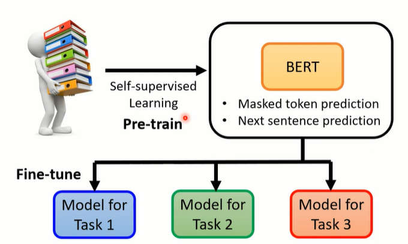
经典的Fine-Tuning方法包括将预训练模型与少量特定任务数据一起继续训练。在这个过程中，预训练模型的权重被更新，以更好地适应任务。所需的Fine-Tuning量取决于预训练语料库和任务特定语料库之间的相似性。如果两者相似，可能只需要少量的Fine-Tuning，如果两者不相似，则可能需要更多的Fine-Tuning。
但是，在大多数下游任务微调时，下游任务的目标和预训练的目标差距过大导致提升效果不明显，微调过程中需要依赖大量的监督语料等等。至此，以GPT3、PET等为首的模型提出一种基于预训练语言模型的新的微调范式——Prompt-Tuning。该方法的目的是通过添加模板的方法将任务目标转化为与预训练目标相似的形式（如MLM），避免引入额外的参数的同时，最大化利用模型的预训练知识。
Prompt-Tuning主要解决传统Fine-Tuning方式的两个痛点：
- 参数规模过大、计算与存储成本高：在全量微调中，模型的所有参数都会更新。对于大模型，这意味着显存占用大、训练速度慢，而且每个下游任务都要保存一份完整的模型权重，存储开销巨大。
- 迁移与多任务场景下的效率低：Fine-Tuning 每个任务都要训练一份新模型，不能很好地在多个任务之间共享大模型参数。导致一个任务一份大模型，难以高效适配多任务、多场景。。
3 Prompt-Tuning(提示微调)
3.1 什么是Prompt?
prompt顾名思义就是“提示”的意思，应该有人玩过你画我猜这个游戏吧，对方根据一个词语画一幅画，我们来猜他画的是什么，因为有太多灵魂画手了，画风清奇，或者你们没有心有灵犀，根本就不好猜啊！这时候屏幕上会出现一些提示词比如3个字，水果，那岂不是好猜一点了嘛，毕竟3个字的水果也不多呀。看到了吧，这就是prompt的魅力.
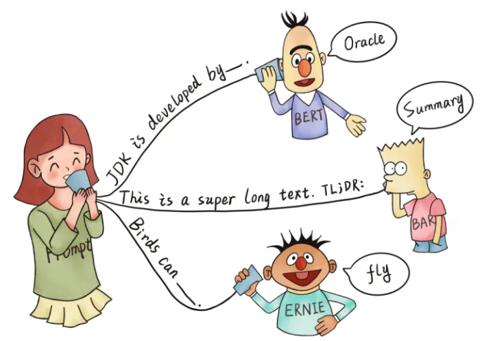
简单来说，Prompt就是你给大型语言模型（LLM）的所有输入，目的是引导它生成你想要的输出。它就像你和AI助手之间的“对话启动器”或“指令”。
你可以把它想象成：
- 给一个非常聪明的学生出考题：你的Prompt就是那个题目，LLM就是学生。题目出得好，学生才能理解你的意图，给出准确的答案。
- 和一位知识渊博但需要引导的专家交流：你的Prompt就是你提问的方式、具体问题和表达方式，LLM就是专家。正确引导专家，才能获得更好的答案。
3.2 Prompt-Tuning定义
基于Fine-Tuning的方法是让预训练模型去迁就下游任务，而基于Prompt-Tuning的方法可以让下游任务去迁就预训练模型，其目的是将Fine-tuning的下游任务目标转换为Pre-training的任务。
那么具体如何工作呢？我们以一个二分类的情感分析为例子，进行简单理解：
- eg: 定一个句子
[CLS] I like the Disney films very much. [SEP] - 传统的Fine-tuning方法: 将其通过BERT的Transformer获得
[CLS]表征之后再喂入新增加的MLP分类器进行二分类，预测该句子是积极的（positive）还是消极的（negative），因此需要一定量的训练数据来训练。 - Prompt-Tuning执行步骤：
- 1.构建模板（Template Construction）: 通过人工定义、自动搜索、文本生成等方法，生成与给定句子相关的一个含有
[MASK]标记的模板。例如It was [MASK].，并拼接到原始的文本中，获得Prompt-Tuning的输入：[CLS] I like the Disney films very much. [SEP] It was [MASK]. [SEP]。将其喂入BERT模型中，并复用预训练好的MLM分类器（在huggingface中为BertForMaskedLM），即可直接得到[MASK]预测的各个token的概率分布。 - 2.标签词映射（Label Word Verbalizer） ：因为
[MASK]部分我们只对部分词感兴趣，因此需要建立一个映射关系。例如如果[MASK]预测的词是“great”，则认为是positive类，如果是“terrible”，则认为是negative类。 - 3.训练：根据Verbalizer，则可以获得指定label word的预测概率分布，并采用交叉信息熵进行训练。这种方法比传统微调的方式需要的数据量少，效果也不错。
- 1.构建模板（Template Construction）: 通过人工定义、自动搜索、文本生成等方法，生成与给定句子相关的一个含有
注意思考：不同的句子应该有不同的template和label word，没错，因为每个句子可能期望预测出来的label word都不同，因此如何最大化的寻找当前任务更加合适的template和label word是Prompt-tuning非常重要的挑战。
其实我们可以理解，引入的模板和标签词本质上属于一种数据增强，通过添加提示的方式引入先验知识。
4 Prompt-Tuning技术发展历程
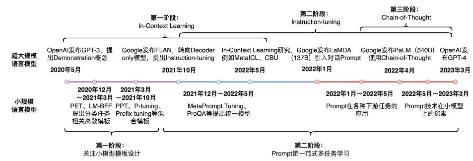
Prompt-Tuning自GPT-3被提出以来，从传统的离散、连续的Prompt构建、走向面向超大规模模型的In-Context Learning、Instruction-tuning和Chain_of_Thought，其发展历程可以概括为以下几个关键点：
- 从 In-Context Learning 到 Prompt Tuning： Prompt Tuning 的灵感来自于 In-Context Learning，但它通过训练 Prompt Tokens，实现了更好的性能和参数效率。
- 从 Hard Prompt 到 Soft Prompt：Prompt Tuning 使用可学习的向量作为 Prompt，而不是自然语言文本，从而避免了人工设计 Prompt 的困难。
- 从单层 Prompt 到多层 Prompt：Prefix-Tuning 在预训练模型的每一层都添加 Prompt Tokens，从而更好地控制模型的行为。
- 从手工设计到自动化搜索：研究人员开始探索如何自动化 Prompt Engineering，以进一步提高 Prompt Tuning 的效率和效果。
5 面向超大规模语言模型的Prompt-Tuning
近两年来，随之Prompt-Tuning技术的发展，有诸多工作发现，对于超过10亿参数量的模型来说，Prompt-Tuning所带来的增益远远高于标准的Fine-tuning，小样本甚至是零样本的性能也能够极大地被激发出来，得益于这些模型的 参数量足够大，训练过程中使用了**足够多的语料**，同时设计的**预训练任务足够有效**。最为经典的大规模语言模型则是2020年提出的GPT-3，其拥有大约1750亿的参数，且发现只需要设计合适的模板或指令即可以**实现免参数训练的零样本学习** 。
本文默认以GPT-3为例，介绍几个面向超大规模的Prompt-Tuning方法，分别为：
- 上下文学习 In-Context Learning（ICL）：直接挑选少量的训练样本作为该任务的提示；
- 指令学习 Instruction-Tuning：构建任务指令集，促使模型根据任务指令做出反馈；
- 思维链 Chain-of-Thought（CoT）：给予或激发模型具有推理和解释的信息，通过线性链式的模式指导模型生成合理的结果。
5.1 In-Context Learning（上下文学习）
ICL的核心思想是**通过上下文示例（demonstrations）让模型理解任务，而无需显式训练**。这一思路在早期 few-shot 学习中已有体现，但这些方法通常依赖训练阶段更新模型参数；GPT-3（2020）首次将其完全置于推理阶段，并明确命名为"In-Context Learning"。
常用的In-context learning方法包括：
- zero-shot learning
- 定义: 给出任务的描述, 然后提供测试数据对其进行预测, 直接让预训练好的模型去进行任务测试.
- 示例: 向模型输入“这个任务要求将中文翻译为英文. 销售->”, 然后要求模型预测下一个输出应该是什么, 正确答案应为“sell”.
- one-shot learning
- 定义: 在预训练和真正翻译的样本之间, 插入一个样本做指导. 相当于在预训练好的结果和所要执行的任务之间, 给一个例子, 告诉模型英语翻译为法语, 应该这么翻译.
- 示例: 向模型输入“这个任务要求将中文翻译为英文. 你好->hello, 销售->”, 然后要求模型预测下一个输出应该是什么, 正确答案应为“sell”.
- few-shot learning
- 定义: 在预训练和真正翻译的样本之间, 插入多个样本（一般10-100条）做指导. 相当于在预训练好的结果和所要执行的任务之间, 给多个例子, 告诉模型应该如何工作.
- 示例: 向模型输入“这个任务要求将中文翻译为英文. 你好->hello, 再见->goodbye, 购买->purchase, 销售->”, 然后要求模型预测下一个输出应该是什么, 正确答案应为“sell”.
目前In-context Learning依然与普通的fine-tuning有一定差距，且预测的结果方差很大，同时也需要花费时间考虑template的构建。
5.2 Instruction-Tuning（指令微调）
面向超大规模模型第二个Prompt技术是指令学习。其实Prompt-Tuning本质上是对下游任务的指令，简单的来说：就是告诉模型需要做什么任务，输出什么内容。在对大规模模型进行微调时，可以使用各种类型的任务定义指令进行训练，来提高模型对不同任务的泛化能力。
什么是Instruction-Tuning？让我们先抛开脑子里的一切概念，把自己当成一个模型。我给你两个任务：
- 1.带女朋友去了一家餐厅，她吃的很开心，这家餐厅太__了！
-
2.判断这句话的情感，回答是积极还是消极：带女朋友去了一家餐厅，她吃的很开心。
-
这两个任务一个是补全任务，一个是判别任务。Prompt就是第一种模式，Instruction就是第二种。
Instruction-Tuning和Prompt-Tuning的核心一样，就是去 发掘语言模型本身具备的知识 。而他们的不同点就在于:
- Prompt是去激发语言模型的 补全能力 ，比如给出上半句生成下半句、或者做完形填空。
- Instruction-Tuning则是激发语言模型的 理解能力 ，通过给出更明显的指令/指示，让模型去理解并做出正确的action.
- Prompt-Tuning在 没有精调 的模型上也能有一定效果，但是Instruct-Tuning则 必须对模型精调 ，让模型知道这种指令模式。
如何实现Instruction-Tuning？
通常是在一个预训练大模型的基础上，收集大规模指令-响应对，并将这些指令转化为自然语言提示（prompt）输入模型，通过监督微调（Supervised Fine-Tuning, SFT）让模型学会按照指令生成符合预期的输出；训练时将指令与上下文拼接成输入序列，目标是最大化模型对正确响应的生成概率，从而让模型在推理时对未见过的新指令也能进行符合意图的生成。
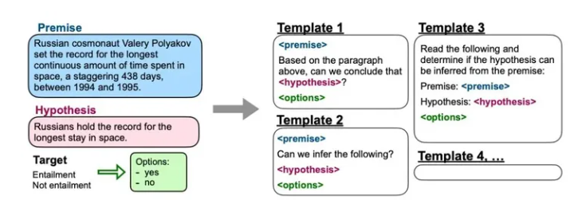
为每个任务设计多个指令模版，测试时看平均和最好的表现。
5.3 Chain-of-Thought（思维链）
思维链 (Chain-of-thought，CoT) 的概念是在 Google 的论文 "Chain-of-Thought Prompting Elicits Reasoning in Large Language Models" 中被首次提出。思维链（CoT）是一种改进的提示策略，用于提高 LLM 在复杂推理任务中的性能，如算术推理、常识推理和符号推理。
CoT 没有像 ICL 那样简单地用输入输出对构建提示，而是结合了中间推理步骤，这些步骤可以作为大模型的输入。简单来说，思维链是一种离散式提示学习，更具体地，相比于之前的上下文学习（即不进行训练，将例子添加到当前样本输入的前面，让模型一次输入这些文本进行输出完成任务），思维链多了中间的推导过程提示。
以一个数学题为例：
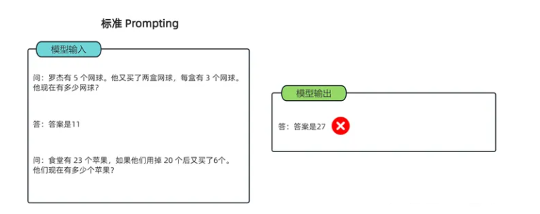
- 可以看到模型无法做出正确的回答。但如果说，我们给模型一些关于解题的思路，就像我们数学考试，都会把解题过程写出来再最终得出答案，不然无法得分。CoT 做的就是这件事，示例如下：
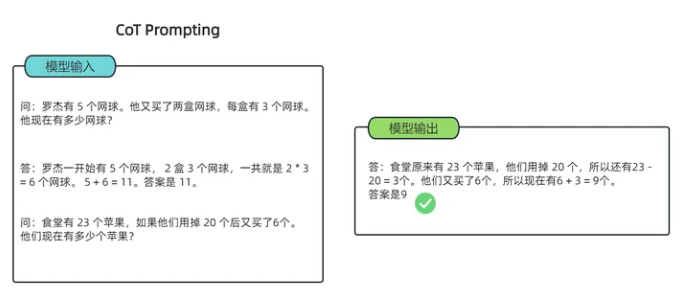
-
可以看到，类似的算术题，思维链提示会在给出答案之前，还会自动给出推理步骤：
“罗杰先有5个球，2盒3个网球等于6个，5 + 6 = 11” “食堂原来有23个苹果，用了20个，23-20=3；又买了6个苹果，3+6=9
上述例子证明了思维链提示给出了正确答案，而直接给出答案的传统提示学习，结果是错的，连很基本的数学计算都做不好。简单来说，语言模型很难将所有的语义直接转化为一个方程，因为这是一个更加复杂的思考过程，但可以通过中间步骤，来更好地推理问题的每个部分。
CoT分类：
- Few-shot CoT ：是 ICL 的一种特殊情况，它通过融合 CoT 推理步骤，将每个演示〈input，output〉扩充为〈input，CoT，output〉。
- Zero-shot CoT：与 Few-shot CoT 不同 在 prompt 中不包括人工标注的任务演示。相反，它直接生成推理步骤，然后使用生成的 CoT 来导出答案。（其中 LLM 首先由 “Let's think step by step” 提示生成推理步骤，然后由 “Therefore, the answer is” 提示得出最终答案。他们发现，当模型规模超过一定规模时，这种策略会大大提高性能，但对小规模模型无效，显示出显著的涌现能力模式）。
一个有效的思维链应该具有以下特点：
-
逻辑性：思维链中的每个思考步骤都应该是有逻辑关系的，它们应该相互连接，从而形成一个完整的思考过程。
-
全面性：思维链应该尽可能地全面和细致地考虑问题，以确保不会忽略任何可能的因素和影响。
-
可行性：思维链中的每个思考步骤都应该是可行的，也就是说，它们应该可以被实际操作和实施。
-
可验证性：思维链中的每个思考步骤都应该是可以验证的，也就是说，它们应该可以通过实际的数据和事实来验证其正确性和有效性。
6 面向小规模语言模型的Prompt-Tuning
对于超大规模语言模型上的Prompt-Tuning虽然有效，但是毕竟需要建立在超大规模的预训练语言模型上，这些模型的参数数量通常超过100亿，在真实场景中很难应用。因此众多研究者开始探索GPT-3这套思路在小规模的语言模型（如Bert）上还是否适用？事实上，这套方法在小规模的语言模型上是可行的，但是需要注意：
- 大模型在 few-shot/zero-shot 学习上表现强大，而小模型的泛化能力远不如 GPT-3。
- 小模型在面对少量训练数据时更容易过拟合，prompt 的微小改动可能导致性能剧烈波动。
因此，面向小规模语言模型的Prompt-Tuning研究同样重要。
6.1 Prompt-Tuning的鼻祖—PET模型
PET模型（Pattern-Exploiting Training）出自《Exploiting Cloze Questions for Few Shot Text Classification and Natural Language Inference》（EACL2021），它是一种 结合了提示学习和少量标注样本监督学习 （Few-shot Supervised Learning）的训练方法，主要用于将下游任务（如文本分类）转化为类似预训练任务（如掩码语言建模）的形式。它通过设计自然语言模式（pattern）和标签词（verbalizer），将输入句子转换为带有[MASK]位置的文本，例如“这个电影很[MASK]。”，然后用预训练语言模型（如BERT）预测[MASK]位置的词，再通过verbalizer转换来完成分类任务。
PET模型提出两个很重要的组件：
- Pattern（Template） ：记作T, 即上文提到的Template，其为额外添加的带有
[mask]标记的短文本，通常一个样本只有一个Pattern（因为我们希望只有1个让模型预测的[mask]标记）。由于不同的任务、不同的样本可能会有其更加合适的pattern，因此如何构建合适的pattern是Prompt-Tuning的研究点之一； - Verbalizer ：记作V, 即标签词的映射，对于具体的分类任务，需要选择指定的标签词（label word）。例如情感分析中，我们期望Verbalizer可能是 （positive和negative是类标签）。同样，不同的任务有其相应的label word，但需要注意的是，Verbalizer的构建需要取决于对应的Pattern。因此 如何构建Verbalizer是另一个研究挑战 。
上述两个组件被称为Pattern-Verbalizer-Pair（PVP），在后续的大多数研究中均采用这种PVP组件。基于PVP的训练目标可以定义为下面形式：给定一个句子和它对应的标签，通过预先定义的 PVP 组件，首先将句子按照模板进行加工，把原本的任务转化为填空（Masked Language Modeling）的形式，然后让模型预测模板中占位符的位置应该出现的词。通过将模型预测的词与标签映射对应起来，计算损失并优化模型参数。后续模型在看到类似句子时，能够通过模板正确地预测对应的标签。
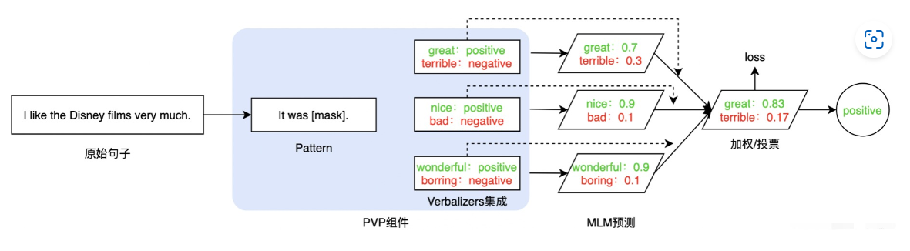
目前基于PVP框架，当前最需要关注的问题是如何选择或构建合适的Pattern和Verbalizer 。一种简单的方法是根据特定任务的性质和先验知识人工设计模板。例如上文例子中通常会选择It was [mask]. 作为情感分析类的模板。人工构建方法虽然直观简单，但是致命问题也很突出。有相关工作在实验中发现，在同样的数据集和训练条件下， 选择不同的Pattern和Verbalizer会产生差异很大的结果 ，如下图所示（一般情况下，Template等同于Pattern，Verbalizer等同于Label word）：
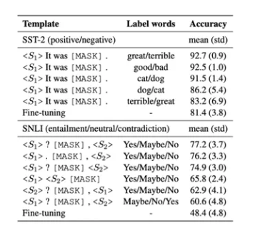
从上图结果可发现，在相同Pattern时，选择不同的label word对结果影响很大，同理，不同的Pattern对结果影响也很明显，在真正应用中，调参者需要尝试多个不同的模板和标签词以穷举出最好的结果，并不能充分发挥Prompt简单快捷的优势。因此我们总结人工设计方法的缺陷：
- 采用人工构建的方法成本高，需要与领域任务相关的先验知识；
- 人工设计的Pattern和Verbalizer不能保证获得最优解，训练不稳定，不同的PVP对结果产生的差异明显，方差大；
- 在预训练阶段MLM任务并非完全按照PVP的模式进行训练的（比如MLM训练通常都是长文本，mask的数量也并非只有1个，预测的概率分布也并非是有限的），因此人工构建的Pattern和Verbalizer使得Prompt-Tuning与MLM在语义和分布上依然存在差异。
【拓展：PET模型的实现步骤】
1）准备数据
- 有一份标注数据集 L（few-shot），和一份未标注数据集 U。
2）设计 pattern（模板）和 verbalizer（映射词）
- Pattern：把原始输入变为 cloze/填空形式（包含一个 [MASK]），例如情感分类：
- 输入句子
X = "这部电影太棒了"→ pattern:"[X]。这条评论是 [MASK] 。"
- 输入句子
- Verbalizer：把类别映射到一个或多个词（label words），例如：
- positive →
"好" - negative →
"差"
- positive →
3）为多个 pattern 分别微调（训练 PET 子模型）
- 选择 k个不同的 pattern（不同风格的提示），对每个 pattern：
- 把 L中的样本转换为 cloze 格式；
- 用 Masked LM 的目标训练（只关注 [MASK] 位置预测是否为 verbalizer 指定的词），得到模型 Mp。
- 损失计算通常是针对 [MASK] 位置上预测到 label words 的交叉熵。
4）用子模型集合（ensemble）对未标注数据做软标注
- 对每个 x∈U，用每个子模型预测 [MASK] 的词表分布，通过 verbalizer 把词表概率聚合成类别概率；
- 对所有 k个模型平均/加权，得到 软标签（soft labels） P(y∣x)。
5）蒸馏 / 训练最终分类器（distillation）
- 用 L（真实标签）和 U（软标签）合并训练一个最终的判别式分类器C（通常是同一预训练 LM 加 classifier head，使用交叉熵对标签进行知识蒸馏）。
- 这样得到的最终模型比单个 PET 子模型更稳定、性能更好。
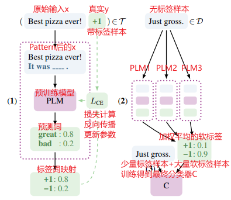
6.2 Prompt-Oriented Fine-Tuning
在PET模型中，对MLM进行微调时，使用的方式为Prompt-Oriented Fine-Tuning。
Prompt-Oriented Fine-Tuning的 本质是将目标任务转换为适应预训练模型的预训练任务，以适应预训练模型的学习体系 。
根据提示的类型不同，POFT方法主要分成三种类型：
- 离散提示：也叫硬模版，其提示是由真实的自然语言单词或符号组成，直接拼接到输入中。
- 连续提示：提示不是实际的单词，而是**可训练的向量**，插入到输入 embedding 序列中。
- 混合提示：同时使用**人工可读的离散 token**和**可训练的连续向量**。
按照训练时参数更新的范围不同，POFT方法主要分成三种类型：
- 全量微调（Full Fine-Tuning）：模型所有参数都参与更新，包括预训练模型参数和下游任务层参数。如PET模型。
- 部分参数微调（Partial Fine-Tuning）：只更新预训练模型中的一部分参数，比如高层 transformer block、某些 attention 层或特定模块，其余参数冻结。如Adapter Tuning。
- 仅提示参数微调（Prompt-Only Tuning）：冻结原始预训练模型参数，只训练 prompt 参数。如P-tuning、Prompt Tuning等。
具体来说，PET中使用的方法为： 基于硬模板+ 全量微调
在PET方法中，使用的方式是Prompt-Tuning+Fine-Tuning的结合体，所以预训练模型参数是会变的。所以PET中使用微调方法，实际上是一种Fine-Tuning的升级版。虽然 PET 也是在优化整个模型的参数，但是相比于传统的 Finetuning 方法，对数据量需求更少。
全量微调方法在BERT类相对较小的模型上表现较好，但是随着模型越来越大，如果每次针对下游任务都需要更新预训练模型的参数，资源成本及时间成本都会很高。因此后续陆续提出了不更新预训练模型参数，单纯只针对prompt进行调优的方法，即基于Soft Prompt的微调方法，如 Prompt Tuning、P-tuning 和 Prefix Tuning 等，显著降低了任务迁移成本
另外，在PET方法中使用的硬模版，同样存在很多问题。
Hard Prompt (离散提示)：是一种固定的提示模板，通过将特定的关键词或短语(真实的文本字符串)直接嵌入到文本中，引导模型生成符合要求的文本。一般根据经验的人工设计或自动化搜索产生的。
这种提示方法的特点在于，提示模板是固定的，不能根据不同的任务和需求进行调整。另外，从PVP的介绍中可以看出使用硬模板时 改变prompt或改变prompt中的单个单词 会给实验结果带来巨大的差异。
下面是常见下游任务的Prompt设计：
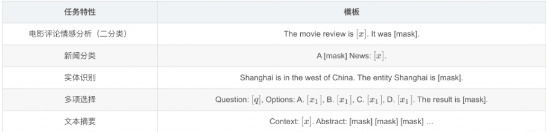
正因为硬模版的问题，后续研究对它进行了很多优化，后来索性直接放弃硬模板，优化 prompt token embedding，即使用Soft Prompt。
6.3 Soft Prompt及微调方法
6.3.1 连续提示模板
Soft Prompt (连续提示) ：是指通过给模型输入一个可参数化的提示模板，从而引导模型生成符合特定要求的文本。这种提示方法的特点在于，提示模板中的参数可以根据具体任务和需求进行调整，以达到最佳的生成效果。
Soft Prompt目的其 将模板转换为可以进行优化的连续向量 ，换句话说，我们不需要显式地指定这些模板中各个token具体是什么，而只需要在语义空间中表示一个向量即可。
这样，不同的任务、数据可以自适应地在语义空间中寻找若干合适的向量，来代表模板中的每一个词，相较于显式的token，这类token称为 伪标记（Pseudo Token） 。下面给出基于连续提示的模板定义：
假设针对分类任务，给定一个输入句子\(x\)，连续提示的模板可以定义为\(T=[x],[v1],[v2],...,[vn][MASK]\)：其中[v1]则是伪标记，其仅代表一个抽象的token，并没有实际的含义，本质上是一个向量。
总结来说：Soft Prompt方法，是将模板变为可训练的参数，不同的样本可以在连续的向量空间中寻找合适的伪标记，同时也增加模型的泛化能力。因此，连续法需要引入少量的参数并在训练时进行参数更新，但预训练模型参数是不变的，变的是prompt token对应的词向量（Word Embedding）表征及其他引入的少量参数。
目前基于连续提示的Prompt-Tuning的实现方法，以下列三篇论文为代表，分别作简要介绍：
- 《The Power of Scale for Parameter-Efficient Prompt Tuning》：代表方法为Prompt Tuning
- 《GPT Understands, Too》：代表方法为P-tuning
- 《PPT: Pre-trained Prompt Tuning for Few-shot Learning》：代表方法PPT
6.3.2 Prompt Tuning（NLG任务）
Prompt Tuning（基于T5模型来做的）方法为每一个输入文本假设一个固定前缀提示，该提示表由神经网络参数化，并在下游任务微调时进行更新，整个过程中预训练的大模型参数被冻结。
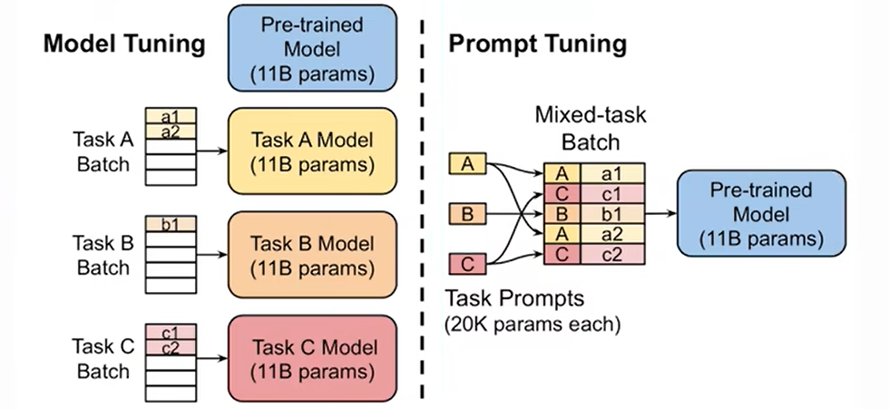
形式化的描述如下：
给定 \(n\)个tokens，记作\(x1, ...,xn\) ，通过一个预训练模型对应的embedding table，可以将\(n\)个token表示为一个向量矩阵\((X_e->R^{n*e})\)，其中\(e\)是向量的维度（其与预训练模型的配置有关，例如BERT-base是768）。连续模板中的每个伪标记\(v_i\)可以视为参数，也可以视为一个token，因此，可以通过另一个embedding table获得\(p\)个伪标记token标记为向量矩阵\((P_e->R^{p*e})\)，然后将文本和Prompt拼接获得新的输入\([P_e:X_e]->R^{(p+n)*e}\).这个新的输入将会送入预训练模型中进行训练。注意，只有prompt对应的向量表征参数P\((P_e->R^{p*e})\)会随着训练进行更新。
每个伪标记的初始化可以有下列几种情况：
- 最简单的是随机初始化：即随机初始化一个面向所有伪标记的embedding table，可采用正态分布或者均匀分布等；
- 每个token使用预训练模型已有的embedding table进行初始化，此时，每一个伪标记先随机指定词表中的一个词，并取对应词的embedding作为这个伪标记的初始化；
- 在分类任务上，使用label word（verbalizer）对应的embedding作为初始化，可以有效限制模型输出的是预设的输出类对应的word。
因此，在训练过程中，每个伪标记对应的参数都可以得到训练，对于不同的输入句子 ，这些伪标记对应的embedding也各不相同，达到了预期的目的。
示例代码：
# 假设输入文本：x1, x2, ..., xn # 预训练模型 embedding 维度 = e # prompt token 数量 = p # 1. 定义预训练模型 (冻结参数) class PretrainedModel: def __init__(self, embedding_dim): self.embedding_table = load_pretrained_embedding() # 词表 -> 向量 self.encoder = load_pretrained_encoder() # BERT, GPT 等 Transformer freeze(self.embedding_table) # 冻结 freeze(self.encoder) # 冻结 def forward(self, input_embeddings): # 输入拼接后的向量 (p+n, e)，送入模型 return self.encoder(input_embeddings) # 2. 定义可训练的 Prompt 参数 (虚拟 token embedding) class PromptEmbedding: def __init__(self, num_prompt_tokens, embedding_dim): # 随机初始化 p 个 prompt 向量 self.prompt_table = Parameter(shape=(num_prompt_tokens, embedding_dim)) def forward(self): return self.prompt_table # (p, e) # 3. 构造输入 # prompt_module参数为 PromptEmbedding 的对象 def build_input(text_tokens, model, prompt_module): # (n, e) 文本 token 的嵌入表示 X_e = model.embedding_table(text_tokens) # (p, e) prompt token 的嵌入表示 P_e = prompt_module.forward() # 拼接得到新的输入 (p+n, e) input_embeddings = concat(P_e, X_e) return input_embeddings # 4. 训练流程 def train(prompt_module, model, dataloader, loss_fn, optimizer): for batch in dataloader: text_tokens, labels = batch # 构建输入 input_embeddings = build_input(text_tokens, model, prompt_module) # 前向传播 outputs = model.forward(input_embeddings) # 计算任务损失 (例如分类 / MLM) loss = loss_fn(outputs, labels) # 反向传播 (只更新 prompt 参数) optimizer.zero_grad() loss.backward() optimizer.step() # =============================== # 使用示例 # =============================== embedding_dim = 768 p = 10 # prompt token 数 # 加载预训练模型 (冻结参数) model = PretrainedModel(embedding_dim) # 初始化 Prompt 模块 (可训练参数) prompt_module = PromptEmbedding(num_prompt_tokens=p, embedding_dim=embedding_dim) # 优化器 (只更新 prompt 参数) optimizer = Adam(params=prompt_module.parameters(), lr=1e-3) # 开始训练 train(prompt_module, model, dataloader, loss_fn, optimizer) # =============================== # 核心要点： # - 文本 token -> embedding (冻结) # - prompt token -> embedding (可训练) # - 拼接后输入模型 # - 反向传播时只更新 prompt embedding # ===============================
Prompt Tuning特点：
- 优点：
- 大模型的微调新范式
- 模型参数规模大了之后，可以将大模型参数固定，指定附加参数来适配下游任务，而且适配性能基本和全参数微调相当。
- 缺点：
- 在小样本学习场景上表现不太行
- 收敛速度比较慢
- 调参比较复杂（prompt 长度、初始化方式、学习率等都需要调整）
6.3.3 P-tuning（NLU任务）
P-tuning的详细内容请参考论文解读：GPT Understands, Too。
P-tuning是另一个具有代表性的连续提示方法，主要针对的是NLU任务，方法图如下所示（图中的\(P_i\)等价于上文的\(v_i\) ，表示伪标记）, 谷歌于2021年发表。
P-tuning 的核心思想是：用一个小的可训练模块把一组“连续提示向量”生成并插入到原始输入 embedding 中，令 冻结的预训练模型 在下游任务上产生正确输出，训练时仅更新 prompt encoder（或提示向量），从而实现低成本高效的调优。
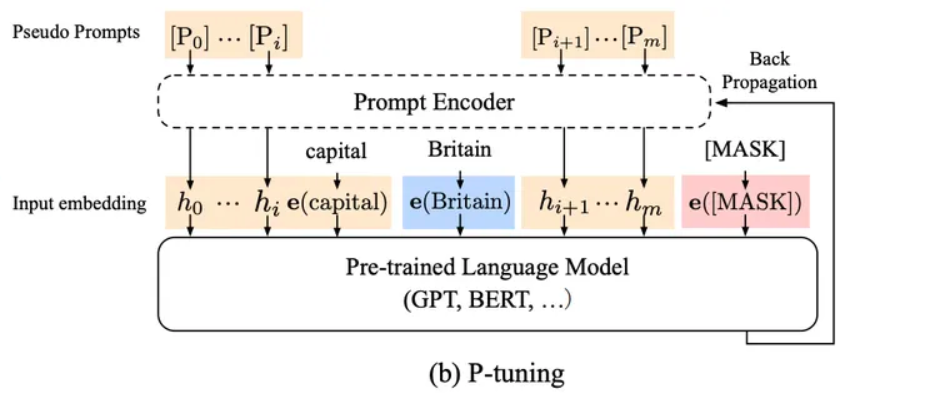
P-Tuning方法中四个技巧点：
- 考虑到这些伪标记的相互依赖关系 ：P-Tuning v1提出**将 Prompt 转换为可以学习的 Embedding 层**，它认为\([P_1]\) 与 \([P_2]\)是有先后关系的，因此引入Prompt Encoder，实际过程中采用Bi-LSTM+前馈神经网络组成，编码之后与其他向量进行拼接之后正常输入 LLM。
- 指定上下文词 ：如果模板全部是伪标记，在训练时无法很好地控制这些模板朝着与对应句子相似的语义上优化，因此选定部分具有与当前句子语义代表性的一些词作为一些伪标记的初始化（例如上图中“capital”）；
- 重参数（Reparameterization） ：具体到代码实现上，P-tuning先通过一个Prompt Encoder表征这些伪标记后，直接将这些新的表征覆盖到对应的embedding table上，换句话说，Prompt Encoder只在训练时候会使用到，而在推理阶段则不再使用。
- 混合提示（Hydride Prompt） ：将连续提示与离散token进行混合，例如\([x1][Britain][x2][mask]\)
示例代码：
# 要点：P-Tuning v1 使用可训练的连续 prompt embedding（软提示），可选地通过一个小的 prompt-encoder（如 LSTM/MLP）对其进行编码； # 通常冻结预训练模型参数，仅训练 prompt 相关参数，从而实现参数高效微调。 import torch import torch.nn as nn import torch.optim as optim # --------------------------- # 超参数 / 配置 # --------------------------- PROMPT_LENGTH = 30 # 软 prompt 的 token 数量 EMBED_DIM = 768 # 与预训练模型的 embedding 维度保持一致 USE_PROMPT_ENCODER = True # 是否使用 prompt-encoder（P-Tuning v1 常见配置） LR = 1e-3 DEVICE = "cuda" # --------------------------- # 软提示模块 # --------------------------- class SoftPrompt(nn.Module): """ 保存一组连续的 prompt embedding（可训练）。 可选地通过一个小的 encoder（例如双向 LSTM 或 MLP）对这些 embedding 建模， 以捕捉 prompt token 之间的依赖关系（这是 P-Tuning v1 的做法之一）。 """ def __init__(self, prompt_length, embed_dim, use_encoder=True): super().__init__() self.prompt_length = prompt_length # 原始的 prompt embedding（可训练参数） self.prompt_embeddings = nn.Parameter(torch.randn(prompt_length, embed_dim) * 0.02) self.use_encoder = use_encoder if use_encoder: # 示例：一个小的双向 LSTM 作为 prompt-encoder（也可以替换为 MLP） self.encoder = nn.LSTM(input_size=embed_dim, hidden_size=embed_dim//2, num_layers=1, batch_first=True, bidirectional=True) # 如果 encoder 的输出维度不同，投影回 embed_dim self.proj = nn.Linear(embed_dim, embed_dim) def forward(self, batch_size): # 将 prompt_embeddings 扩展到 batch 维度 p = self.prompt_embeddings.unsqueeze(0).expand(batch_size, -1, -1) # (B, P, D) if self.use_encoder: out, _ = self.encoder(p) # (B, P, 2*H) 如果是双向 LSTM out = self.proj(out) # (B, P, D) return out else: return p # (B, P, D) # --------------------------- # P-Tuning 高层封装模型 # --------------------------- class PTuningModel(nn.Module): def __init__(self, base_model, tokenizer, soft_prompt: SoftPrompt, prompt_position="prepend"): """ base_model: 已加载的预训练 language model（例如 GPT-2 / BERT 等） tokenizer: 用于分词的 tokenizer（示例中仅用于演示） soft_prompt: SoftPrompt 实例 prompt_position: 'prepend'（在输入前拼接）或其它插入位置 """ super().__init__() self.base = base_model self.tokenizer = tokenizer self.soft_prompt = soft_prompt self.prompt_position = prompt_position # 通常在 P-Tuning v1 中冻结预训练模型参数，仅训练 prompt 相关的参数 for param in self.base.parameters(): param.requires_grad = False # 如果是分类任务，可以在这里加一个小的 task head（示例可选） # self.classifier = nn.Linear(EMBED_DIM, num_labels) # 可选 def forward(self, input_ids, attention_mask=None, labels=None): """ input_ids: (B, L) 返回 logits 和（可选）loss """ batch_size = input_ids.size(0) # 1) 获取基础模型的 token embedding（不同模型接口略有差别） # 假设 base 模型有 get_input_embeddings() 方法 token_emb = self.base.get_input_embeddings()(input_ids) # (B, L, D) # 2) 获取软提示 embedding： (B, P, D) prompt_emb = self.soft_prompt(batch_size) # 3) 根据位置拼接 prompt（此处演示 prepend） if self.prompt_position == "prepend": # 新序列为：[P soft tokens] + [L 原始 tokens] new_emb = torch.cat([prompt_emb, token_emb], dim=1) # (B, P+L, D) # 如果提供了 attention_mask，需要相应扩展 if attention_mask is not None: prompt_mask = torch.ones(batch_size, prompt_emb.size(1), device=input_ids.device) new_attention_mask = torch.cat([prompt_mask, attention_mask], dim=1) else: new_attention_mask = None # 注意：有些模型需要调整位置编码或为 prompt 指定特定的位置索引， # 具体实现依赖于 base 模型的细节。 else: raise NotImplementedError("此伪代码仅展示 'prepend' 的情况") # 4) 将 embeddings 直接传入基础模型（若模型支持 inputs_embeds 参数） outputs = self.base(inputs_embeds=new_emb, attention_mask=new_attention_mask, return_dict=True) logits = outputs.logits # 具体 shape 取决于模型与任务 # 5) 若提供 labels 则计算损失（任务相关，例如语言建模或分类） loss = None if labels is not None: # 以语言建模为例：需要对 logits/labels 进行 shift shift_logits = logits[..., :-1, :].contiguous() shift_labels = labels[..., 1:].contiguous() loss_fct = nn.CrossEntropyLoss() loss = loss_fct(shift_logits.view(-1, shift_logits.size(-1)), shift_labels.view(-1)) return {"logits": logits, "loss": loss} # --------------------------- # 训练主循环 # --------------------------- def train_ptuning(model: PTuningModel, train_dataloader, num_epochs=3): # 仅优化需要梯度的参数（即 soft prompt、encoder、以及可选的 task head） prompt_params = [p for p in model.parameters() if p.requires_grad] optimizer = optim.AdamW(prompt_params, lr=LR) model.to(DEVICE) model.train() # base 模型虽然被冻结，但 soft prompt 模块可能需处于训练模式 for epoch in range(num_epochs): for batch in train_dataloader: input_ids = batch["input_ids"].to(DEVICE) # (B, L) attention_mask = batch.get("attention_mask", None) labels = batch.get("labels", None) out = model(input_ids, attention_mask=attention_mask, labels=labels) loss = out["loss"] optimizer.zero_grad() loss.backward() optimizer.step() print(f"Epoch {epoch} loss: {loss.item():.4f}") # 训练结束后通常只保存 prompt 参数（体积很小） torch.save(model.soft_prompt.state_dict(), "soft_prompt.pt") # --------------------------- # 推理：加载 prompt 并运行 # --------------------------- def load_prompt_and_infer(base_model, tokenizer, prompt_path, input_text): soft_prompt = SoftPrompt(PROMPT_LENGTH, EMBED_DIM, use_encoder=USE_PROMPT_ENCODER) soft_prompt.load_state_dict(torch.load(prompt_path)) pt_model = PTuningModel(base_model, tokenizer, soft_prompt) pt_model.to(DEVICE) pt_model.eval() # 将输入文本 tokenize -> input_ids tokens = tokenizer(input_text, return_tensors="pt").to(DEVICE) out = pt_model(tokens["input_ids"], attention_mask=tokens.get("attention_mask", None)) # 根据任务把 logits 解码为文本或标签 # ... return out
P-tuning的特点：
- 优点：
- 引入了一个 LSTM +MLP模块对 soft prompt 进行建模，能捕捉 token 之间的顺序和语义关系
- 改进了离散 prompt的不稳定性问题，收敛速度更快
- 缺点
- 仅放在输入层时，对模型内部深层表征的影响有限，面对一些需要深层表示调整的 NLU/序列标注任务表现并不稳定或不足
- 在中小模型（100M–1B）表现较差
P-Tuning v2是升级版本，主要解决**P-Tuning v1 在小参数量模型上表现差的问题**。 详细信息可参考《[P-Tuning v2: Prompt Tuning Can Be Comparable to Fine-tuning Universally Across Scales and Tasks》。
P-Tuning v2 的目标就是要让 Prompt Tuning 能够在不同参数规模的预训练模型、针对不同下游任务的结果上都达到匹敌 Fine-tuning 的结果。 该方法**在模型的每一层都应用连续的 prompts 并对 prompts 参数进行更新优化**。
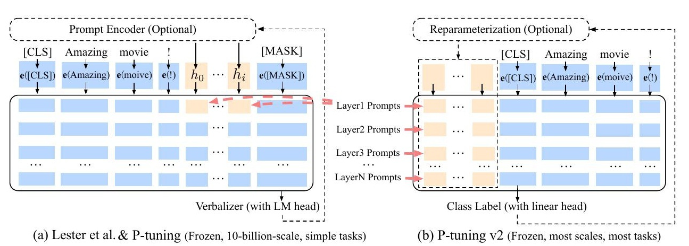
示例代码：
import torch import torch.nn as nn import torch.optim as optim # --------------------------- # 超参数 / 配置 # --------------------------- PREFIX_LENGTH = 20 # 每层 prefix token 数量（可视为每层的 "soft tokens"） EMBED_DIM = 768 # 模型 embedding 维度（与 base model 保持一致） NUM_LAYERS = 12 # base transformer 层数（例如 GPT-2 small = 12） NUM_HEADS = 12 # 注意力头数 HEAD_DIM = EMBED_DIM // NUM_HEADS LR = 1e-3 DEVICE = "cuda" # --------------------------- # 小工具：把向量 reshape 成 attention 所需的 (B, num_prefix, n_head, head_dim) # 并转置成某些框架期望的格式 (B, n_head, num_prefix, head_dim) # --------------------------- def reshape_to_kv(x, batch_size, num_prefix, num_heads, head_dim): # x: (B, num_prefix, num_heads * head_dim) x = x.view(batch_size, num_prefix, num_heads, head_dim) # (B, P, H, D_h) x = x.permute(0, 2, 1, 3).contiguous() # (B, H, P, D_h) return x # --------------------------- # Prompt Encoder（支持有/无 MLP 两种模式） # --------------------------- class PrefixEncoder(nn.Module): def __init__(self, prefix_len, embed_dim, num_layers, num_heads, head_dim, prefix_projection: bool = True, prefix_hidden_size: int | None = None): """ prefix_projection=True: embedding: (prefix_len, embed_dim) trans (MLP): embed_dim -> prefix_hidden_size -> out_dim prefix_projection=False: embedding: (prefix_len, out_dim) # 直接输出最终所需的扁平向量 """ super().__init__() self.prefix_len = prefix_len self.num_layers = num_layers self.num_heads = num_heads self.head_dim = head_dim self.prefix_projection = prefix_projection out_dim = num_layers * 2 * num_heads * head_dim # 每个 token 的输出 dim（扁平化 k&v） if self.prefix_projection: if prefix_hidden_size is None: # 如果没有给出 hidden_size，默认用 embed_dim prefix_hidden_size = embed_dim # 原始 P-Tuning v2 常用结构：Embedding（D） + 两层 MLP（D -> hidden -> out_dim） self.embedding = nn.Embedding(prefix_len, embed_dim) self.trans = nn.Sequential( nn.Linear(embed_dim, prefix_hidden_size), nn.Tanh(), nn.Linear(prefix_hidden_size, out_dim) ) else: # 直接把 embedding 的输出维度做成最终需要的 out_dim（与原始 snippet 保持一致） self.embedding = nn.Embedding(prefix_len, out_dim) # 没有 mlp self.trans = None def forward(self, batch_size, device=None, dtype=None): """ 返回：list of length num_layers，每个元素为 (k, v)， 其中 k/v 形状为 (B, n_head, P, head_dim) """ # device/dtype 兼容：优先使用 embedding 的 device/dtype emb_device = self.embedding.weight.device if hasattr(self.embedding, "weight") else (device or torch.device("cpu")) if device is None: device = emb_device if dtype is None: dtype = self.embedding.weight.dtype if hasattr(self.embedding, "weight") else torch.float # 获取 prefix token 的 embedding（B, P, dim) # 方法：先取出 embedding.weight -> (P, dim) -> unsqueeze(0).expand(B, P, dim) token_emb = self.embedding.weight.unsqueeze(0).expand(batch_size, -1, -1).to(device=device, dtype=dtype) # (B, P, dim) if self.prefix_projection: # 通过 MLP 映射到 out_dim encoded = self.trans(token_emb) # (B, P, out_dim) else: # embedding 已经是 out_dim encoded = token_emb # (B, P, out_dim) # encoded -> (B, P, num_layers, 2, n_head * head_dim) encoded = encoded.view(batch_size, self.prefix_len, self.num_layers, 2, self.num_heads * self.head_dim) outs_per_layer = [] for layer in range(self.num_layers): k_flat = encoded[:, :, layer, 0, :].contiguous() # (B, P, n_head*head_dim) v_flat = encoded[:, :, layer, 1, :].contiguous() k = reshape_to_kv(k_flat, batch_size, self.prefix_len, self.num_heads, self.head_dim) v = reshape_to_kv(v_flat, batch_size, self.prefix_len, self.num_heads, self.head_dim) outs_per_layer.append((k, v)) return outs_per_layer # --------------------------- # P-Tuning-V2 高层封装模型 # --------------------------- class PTuningV2Model(nn.Module): def __init__(self, base_model, tokenizer, prefix_encoder: PrefixEncoder): super().__init__() self.base = base_model self.tokenizer = tokenizer self.prefix_encoder = prefix_encoder # 冻结基础模型参数（仅训练 prefix_encoder） for p in self.base.parameters(): p.requires_grad = False def _build_past_key_values(self, batch_size, device, dtype): # 让 prefix encoder 在相同 device/dtype 上产生 KV prefix_kv = self.prefix_encoder(batch_size, device=device, dtype=dtype) return prefix_kv def forward(self, input_ids, attention_mask=None, labels=None): batch_size = input_ids.size(0) device = input_ids.device dtype = input_ids.dtype # 1) 构造 prefix past_key_values prefix_kv = self._build_past_key_values(batch_size, device=device, dtype=torch.float) # KV 通常为浮点 # 2) 构造扩展 attention_mask prefix_mask = torch.ones(batch_size, self.prefix_encoder.prefix_len, device=device, dtype=attention_mask.dtype if attention_mask is not None else torch.long) if attention_mask is not None: new_attention_mask = torch.cat([prefix_mask, attention_mask], dim=1) # (B, P + L) else: new_attention_mask = None # 3) 调用 base model（保持与原来接口一致） outputs = self.base(input_ids=input_ids, attention_mask=new_attention_mask, past_key_values=prefix_kv, return_dict=True) logits = outputs.logits loss = None if labels is not None: shift_logits = logits[..., :-1, :].contiguous() shift_labels = labels[..., 1:].contiguous() loss_fct = nn.CrossEntropyLoss() loss = loss_fct(shift_logits.view(-1, shift_logits.size(-1)), shift_labels.view(-1)) return {"logits": logits, "loss": loss} # --------------------------- # 训练循环 # --------------------------- def train_ptuning_v2(model: PTuningV2Model, train_dataloader, num_epochs=3): trainable_params = [p for p in model.prefix_encoder.parameters() if p.requires_grad] optimizer = optim.AdamW(trainable_params, lr=LR) model.to(DEVICE) model.train() for epoch in range(num_epochs): for batch in train_dataloader: input_ids = batch["input_ids"].to(DEVICE) attention_mask = batch.get("attention_mask", None) if attention_mask is not None: attention_mask = attention_mask.to(DEVICE) labels = batch.get("labels", None) if labels is not None: labels = labels.to(DEVICE) out = model(input_ids=input_ids, attention_mask=attention_mask, labels=labels) loss = out["loss"] optimizer.zero_grad() loss.backward() optimizer.step() print(f"Epoch {epoch} loss: {loss.item():.4f}") # 保存 prompt encoder（参数量小） torch.save(model.prefix_encoder.state_dict(), "prefix_encoder.pt") # --------------------------- # 推理：加载 prefix encoder 并进行推理（示例） # --------------------------- def load_prefix_and_infer(base_model, tokenizer, prefix_path, input_text, prefix_projection=True, prefix_hidden_size=None): prefix_encoder = PrefixEncoder(PREFIX_LENGTH, EMBED_DIM, NUM_LAYERS, NUM_HEADS, HEAD_DIM, prefix_projection=prefix_projection, prefix_hidden_size=prefix_hidden_size) prefix_encoder.load_state_dict(torch.load(prefix_path, map_location=DEVICE)) pt_model = PTuningV2Model(base_model, tokenizer, prefix_encoder) pt_model.to(DEVICE) pt_model.eval() tokens = tokenizer(input_text, return_tensors="pt").to(DEVICE) out = pt_model(tokens["input_ids"], attention_mask=tokens.get("attention_mask", None)) return out
P-tuning v2的特点：
- 优点：
- 把 soft prompts 注入每层，能在多种规模与任务上接近全量微调效果
- 缺点
- 深层 prompt 或长 soft prompt 会占用较多 token / 输入空间
- P-tuning 的 soft prompt 是针对每个下游任务独立训练的，无法直接迁移到其他任务上使用
6.3.4 PPT（Pre-trained Prompt Tuning）
Prompt-Tuning通常适用于低资源场景，但是由于连续的模板是随机初始化的，即其存在新的参数，少量样本可能依然很难确保这些模板被很好地优化。因此简单的方法就是对这些连续的模板也进行预训练。PPT旨在通过先让这些连续提示在大量无标注的预训练语料进行预训练（注意，预训练过程中，Pre-train-model参数固定不变，只改变soft prompt），然后将其加载到对应下游任务的PLM上进行微调后使用。如下图所示（图中的\(P\)即连续的提示模板，\(<X>\)并表示为mask token）：
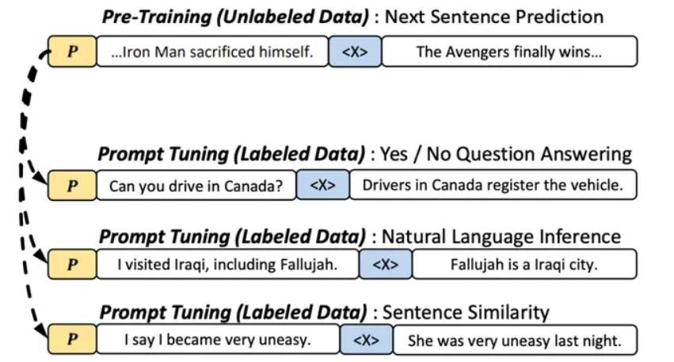
首先会预训练一个soft Prompt，然后预训练后的soft Prompt可以直接运用到相似任务中
具体步骤如下：
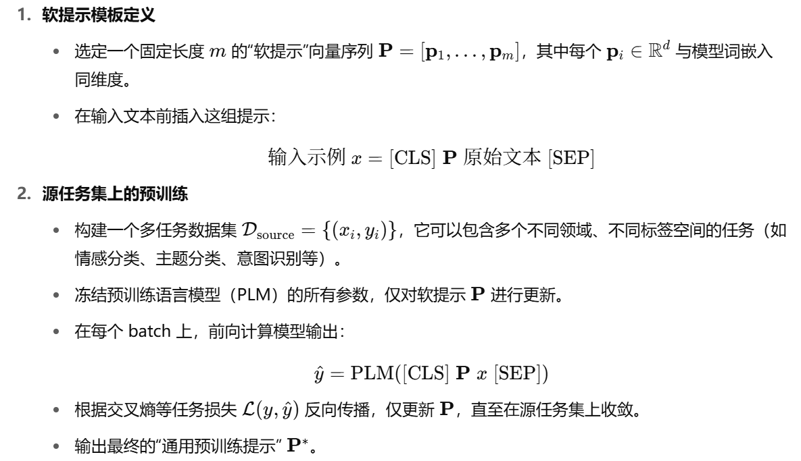
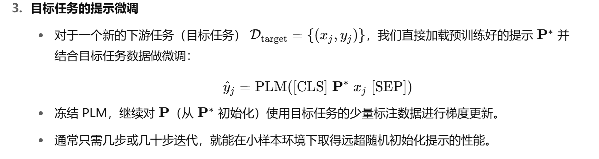
PPT的特点：
- 优点：
- 预训练soft-prompt带来了 小样本学习场景上的显著提升
- 缓解了prompt-tuning收敛慢的问题
- 缺点
- 高度依赖于源任务集的覆盖度与多样性(一旦目标任务与预训练时用到的源任务在分布、格式或语义上差异较大，通用提示 𝑃就难以提供有效的初始引导，导致下游微调效果大幅下降)
小结总结
- 本小节主要介绍了NLP发展的四种范式、Fine-Tuning以及Prompt-Tuning的基本思想和原理
- 本章节内容详细叙述了Prompt-Tuning主要代表方法